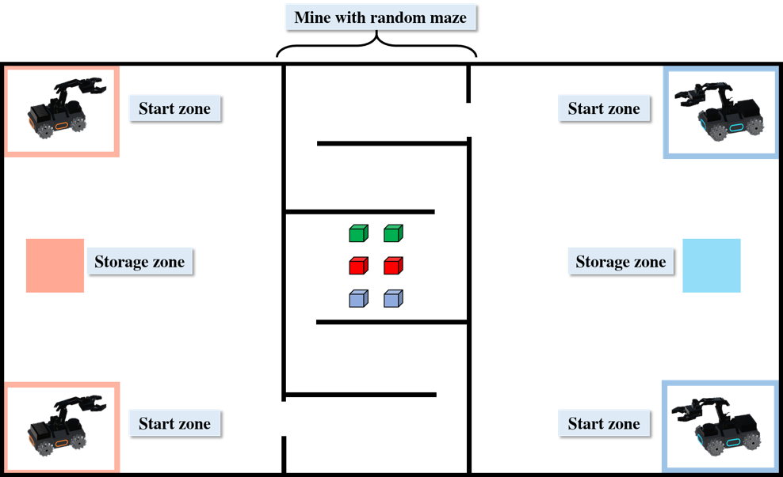

<p>"Although multi-agent deep reinforcement learning often outperforms gaming agents, there aren't many robotics applications for it. The advancement of reinforcement learning-based robot control has reached a level never before seen, and the ability to work with other robots to increase task execution efficiency has emerged as the key to furthering performance improvement. The goal of our proposed multi-robot mining competition is to encourage the development of multi-agent deep reinforcement learning algorithms in challenging multi-robot tasks. It is based on the integration of multi-agent algorithms with robots. The red and blue robots will compete for tasks by learning new skills, working together with other agents, and being robust when transferring from simulation to physical robots."</p>



